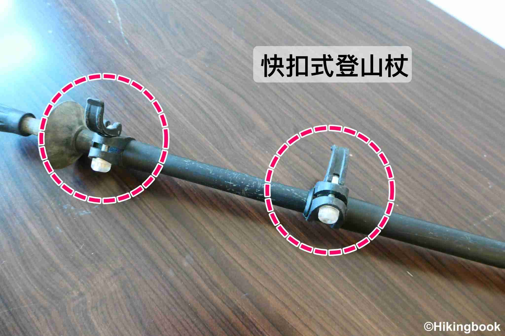

行進系統包含了可以讓你舒適、順暢地走完行程的行走裝備，有沒有穿到適合的裝備，有天差地遠的差異，也是我們建議多花一些時間挑選的部分。 【登山鞋】 登山鞋的挑選，同樣會受行程天數、種類影響。一般而言，若是當天往返行程、或是非重裝兩天一夜的行程，穿低筒的登山鞋是 OK 的；但若是需要走較長的天數、背負重裝，則會建議挑選中高筒的登山鞋，對腳踝的固定、保護效果會較好。另外，因為臺灣氣候多雨，建議挑選有防水功能的登山鞋 去試穿登山鞋的時候，建議帶一雙厚襪去試穿，尺寸會比較準確。
在臺灣，大家常會問：「爬山穿雨鞋比較好嗎？」，這個問題的答案會因路線而異。假設已經知道會去走比較泥濘的路線（如：松羅湖、加羅湖等），穿雨鞋就可以避免鞋子乾不了、或是泥巴、異物跑到鞋子裡面的窘境；但如果是重裝行走長天數，或是路段比較崎嶇（如：碎石路段），還是會建議穿中高筒、底部較硬的登山鞋，比較可以提供保護與支撐。 【關於穿雨鞋的小提醒】 1. 建議雨鞋裡再多穿一雙襪子、或是加上鞋墊、護踝，讓腳趾不會在下坡的時候一直往前頂，導致受傷。 2. 雪地行走不應穿雨鞋、更不應將冰爪套在雨鞋上行走，因為雨鞋的軟底原本就不適合上冰爪、加上沒有保暖能力，是很不適合的裝備。 不管是登山鞋或雨鞋，只要是之前沒穿過的鞋子，上山前都應該要試走（如：去附近的郊山試走），確保穿起來是沒問題的。 【登山襪】 除了要有適合的登山鞋以外，別忽略了登山襪的重要性。登山鞋比一般鞋款來的硬，薄襪缺乏緩衝的功能，容易讓腳掌不舒服，因此建議選擇有厚度並高於鞋筒的登山襪。 材質的部分，建議可以選擇羊毛，除了具備透氣、排汗的功能以外，抗菌抑臭的效果也很好，走長天數的行程就會非常有感。 【登山杖】 登山杖的調節系統主要可分為快扣式與旋轉式，初次使用登山杖的入門新手，比較推薦使用快扣式的登山杖，一來是比較方便調節、二來是比較不會因為操作上的錯誤而出現意外（沒轉緊導致使用時整節掉出、轉錯方向等）。  材質主要有碳纖維與鋁合金，前者雖然較輕但比較無法承受側向的力量（容易斷掉），後者則是比較重但硬度相對較硬，如果背重裝行走，一般會比較建議選擇鋁合金材質。 【綁腿】（選用） 綁腿的功用主要有以下：1) 避免雨水滲入鞋子、防止穿越箭竹林時褲管被沾濕 2) 防止螞蝗進入褲管 3) 保護登山褲，減少被磨損、勾破的機會 4) 防止異物掉進登山鞋裡。綁腿雖然不是非帶不可的裝備，但若背包重量與容量允許，還是建議可以準備；尤其是泥濘路段若不想穿雨鞋，就會強烈建議攜帶綁腿。 小提醒：下雨的時候，綁腿要穿在雨褲裡面，才是正確的穿法喔！ 【護膝】【護踝】（選用） 護膝可以減少膝蓋軟骨承受的壓力、增加關節的穩定度，通常會在下坡路段時用到（上坡則較少）。但這邊要特別提醒的是，使用護膝雖然有減緩壓力的效果，但相對的也會影響肢體的彎曲性，讓活動比較不靈活，因此建議是有舊傷或是不舒服時使用，不建議用來「預防」而一直穿著。同樣的，護踝的使用，也是按照這樣的邏輯，有需要的時候再戴上即可。